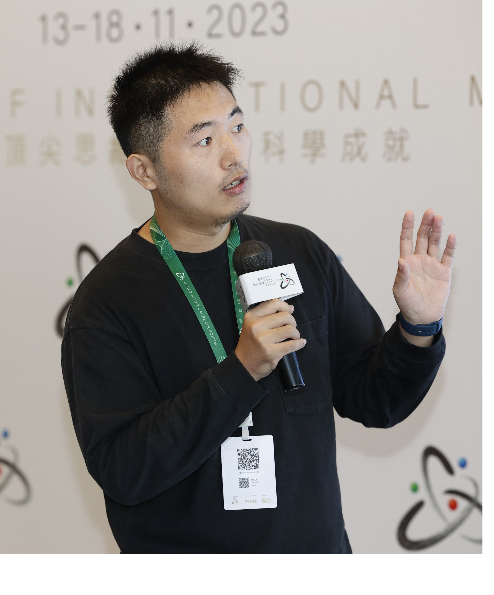

Qianhang Ding 丁乾航 To Understand To Find

I am a Research Fellow at
Center for Theoretical Physics of the Universe (CGA Group),
Institute for Basic Science.
Room B465, Center for Theoretical Physics of the Universe, 2018-2023 PhD in Physics, Department of Physics, The Hong Kong University of Science and Technology 2014-2018 Bachelor of Science, Department of Physics, Shanxi University
I mainly work on gravitational wave cosmology, and use gravitational wave as a probe to understand the fundamental physics in cosmology, such as cosmic tensions in Lambda-CDM model, the property of dark universe, and the origin of primordial black holes. Based on my work, I try to understand the origin of the universe.
Contact information:
Theory Building, Institute for Basic Sciene (IBS),
55, Expo-ro, Yuseong-gu, Daejeon, Korea.
Email:
dingqh@ibs.re.kr
Education
Employment
2023-present Senior Researcher, Center for Theoretical Physics of the Universe (CGA Group), Institute for Basic Science
2024, 05-06 QUPIP Researcher, QUP, High Energy Accelerator Research Organization (KEK)
2022-2023 Research Assistant, Department of Physics, The Hong Kong University of Science and Technology
Research Interest
Theory: gravitational wave cosmology, cosmic tensions, dark matter, primordial black hole, and fundamental topics
Observation: multi-messenger astronomy such as CMB physics, gravitational wave and pulsar astronomy
Research Highlights


Cosmological Standard Timers Cosmological dynamic systems can work as standard timers in tracking the evolution of the Universe. By studing their intrinsic dynamics, the physical evolution time from the initial state to later states can be extracted. Meanwhile, cosmological redshift can be decoded from their observable. As the result, the redshift-time relation can be constructed in cosmological standard timers, which can constrain cosmological models. In the first study on standard timers, we have shown that through the Hawking radiation emitted from light primordial black hole (PBH) clusters, PBH stellar bubbles can be used as standard timers [2112.10422]. Later, I show that through gravitational waves emitted from PBH binaries, PBH binaries can be used as standard timers [2206.03142].
Recent Researches
Extracting Properties of Dark Dense Environment around Black Holes from Gravitational Waves [PDF]
Qianhang Ding, Minxi He, Hui-Yu Zhu
Abstract:
Dark matter (DM) can form dense condensates around black holes (BHs), such as superradiant clouds and ultracompact mini halos, which can significantly affect the orbital evolution of their companion objects through dynamical friction (DF). In this work, we define a novel quantity to quantify such effects in the emitted gravitational waves (GWs) in terms of GW amplitude, frequency, and their time derivatives. The information about the density profile can be extracted from this quantity, which characterizes the type of condensate and, therefore, the corresponding DM property. This quantity allows us to probe the dark dense environment by multi-wavelength GW observation with existing ground-based and future space-based GW detectors, potentially reveals the properties of the dark sector and sheds light on the primordial origin of the stellar mass BHs. A null detection can place strong constraints on the relevant DM parameters.
Superradiant Bosons Driving Supermassive Black Hole Mergers
[PDF]
Qianhang Ding, Minxi He, Volodymyr Takhistov, Hui-Yu Zhu
Abstract:
Ultralight bosons (ULBs) can form macroscopic superradiant clouds around spinning black holes. We show that for scalar ULB masses μ∼10^(−22)−10^(−21) eV boson cloud dynamical friction drives supermassive black hole (SMBH) final-parsec evolution in ≲1 Gyr and suppresses the nanohertz gravitational wave background with turnover. Considering century-monitored OJ287 system, we place novel bounds restricting ULB mass range μ≃(8.5−22)×10^(−22) eV independent of any dark matter assumptions and show ULB drag can also efficiently reconcile any future confirmations of the debated orbital decay excess. Forthcoming pulsar timing array data and precise SMBH orbital timings will decisively test this scenario.
My Research Details in Google Scholar
My CV [Updated at 2 Aug, 2025]
Outreach
Astrophotography [bilibili Channel]
Popular science article for the Hong Kong Laureate Forum [Link]